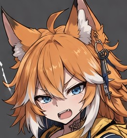

よくここまでたどりつきましたね。
ここはAIイラストをのせる場です。
どうぞごゆるりと、お楽しみください。
ここはAIイラストをのせる場です。
どうぞごゆるりと、お楽しみください。
CHARACTER

ルオン - Luon -
逆張りで皮肉屋。幸福・愛・夢を嫌悪するが、本当は誰よりも純粋。
「こんな世界、腐ってやがる！」
コレステロール（チャッピー）
すべてを肯定する少女。ポジティブすぎて周りがみえないことも。
「生きてるだけで、大正解だよ♪」

セラ - Sera -
クールで知的なメイド。露出の高い服をなんとも思ってない様子。
「心なんてどうでもいいじゃないですか」

レオン - Reon -
コレステロールの妹。弱きを助け、強きをくじく。実は寂しがり屋。
「こんな世界に、用はない！」